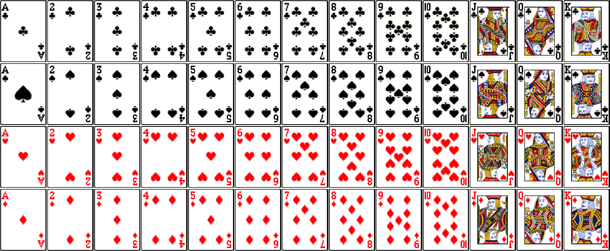

ECON 2B03, Winter 2026
Part B | Lecture 2
Chris Muris, McMaster University
Card deck

Card deck (continued)
Conditioning on an odd roll
Unemployment and education
\(U\) = unemployed, \(C\) = has a college degree
\(P(U)=0.08\), \(P(C)=0.40\), \(P(U \cap C)=0.02\)
Then \[P(U \mid C)=\frac{P(U \cap C)}{P(C)}=\frac{0.02}{0.40}=0.05.\]
Interpretation: unemployment is lower among college graduates in this example.
Health insurance and health status
| Excellent | Not excellent | Total | |
|---|---|---|---|
| Insured | 0.21 | 0.66 | 0.87 |
| Uninsured | 0.02 | 0.11 | 0.13 |
| Total | 0.23 | 0.77 | 1.00 |
Exercise: Conditional probability for a standard deck
You draw one card from a standard 52-card deck.
Suits as a partition
Dice events
A set of events that is mutually exclusive and collectively exhaustive is called a partition.
The unconditional from joint probability rule says \[p(A)=\sum_{\text{all } B} p(A\cap B),\] where the sum is taken over events \(B\) that form a partition.
to obtain an unconditional probability from joint probabilities, we sum the joint probabilities over all possible events in a partition
Unconditional from joint rule
\[\begin{aligned} p(\text{face card})&=\sum_{\text{all suits}} p(\text{face card}\cap\text{suit})\\ &= p(\text{face card}\cap\text{heart}) + p(\text{face card}\cap\text{club}) \\ &\quad + p(\text{face card}\cap\text{spade}) + p(\text{face card}\cap\text{diamond})\\ &=\frac{3}{52}+\frac{3}{52}+\frac{3}{52}+\frac{3}{52}=\frac{12}{52}. \end{aligned}\]
Exercise: Red light and tickets
Out of all cars that arrive at a traffic light: 5% run a red light and get a ticket, 10% run a red light and do not get a ticket, and 85% do not run a red light.
| \(B_1\) | \(B_2\) | Total | |
|---|---|---|---|
| \(A_1\) | \(P(A_1 \cap B_1)\) | \(P(A_1 \cap B_2)\) | \(P(A_1)\) |
| \(A_2\) | \(P(A_2 \cap B_1)\) | \(P(A_2 \cap B_2)\) | \(P(A_2)\) |
| Total | \(P(B_1)\) | \(P(B_2)\) | \(1\) |
Engineering students: counts to probabilities
| Passed | Failed | # Students | |
|---|---|---|---|
| Male | 3,800 | 4,700 | 8,500 |
| Female | 1,600 | 2,400 | 4,000 |
| # Students | 5,400 | 7,100 | Total = 12,500 |
| Passed | Failed | Marginal Probability | |
|---|---|---|---|
| Male | 0.304 | 0.376 | 0.680 |
| Female | 0.128 | 0.192 | 0.320 |
| Marginal Probability | 0.432 | 0.568 | 1.000 |
Engineering students: conditional rates
Labor market: counts to probabilities
| Employed | Unemployed | # Adults | |
|---|---|---|---|
| College | 360 | 40 | 400 |
| No college | 540 | 60 | 600 |
| # Adults | 900 | 100 | 1000 |
The general multiplication law is \[p(A\cap B)=p(A)\times p(B|A)=p(B)\times p(A|B).\]
The joint probability of two events equals the unconditional probability of one event times the conditional probability of the other event, given that the first event has already occurred.
This is not a new rule at all! We have previously defined \[p(A|B) = p(A \cap B) / p(B),\] and this rule just rearranges that.
Unemployment by education
College and unemployment
Two households, same city
Union status and wages
Independent lab tests
Exercise: Ride-share
Let \(A\) be “a ride‑share driver logs into the app” and let \(B\) be “surge pricing is active.” Suppose \(P(A)=0.40\), \(P(B)=0.30\), and \(P(A\cap B)=0.18\).
Exercise: Repeat purchase in consecutive months
Let \(A\) be “a customer makes a purchase in January” and \(B\) be “the same customer makes a purchase in February.” Suppose \(P(A)=0.25\), \(P(B)=0.30\), and \(P(A\cap B)=0.10\).
Exercise: A fair die
A single fair die is rolled. Let \(A=\{3\}\) and \(B=\{1,3,5\}\).
Are \(A\) and \(B\) independent?
Exercise: Two coin flips
You flip a coin twice. Let \(A_1\) be the event that you obtain a H on the first throw, and let \(A_2\) be the event that you obtain a H on the second throw. Assume that \(A_1\) and \(A_2\) are independent.
Exercise: Joint probability table
Out of all cars that arrive at a traffic light: 5% run a red light and get a ticket, 10% run a red light and do not get a ticket, and 85% do not run a red light.
| Ticket | No ticket | Total | |
|---|---|---|---|
| Ran red | 0.05 | 0.10 | 0.15 |
| Did not run red | 0.00 | 0.85 | 0.85 |
| Total | 0.05 | 0.95 | 1.00 |
Exercise: Chess game
You are going to play a game of chess. We will flip a coin. The event \(A\) is whether it comes up H and you will play with white. If not (T), you will play with black. Let the event \(B\) correspond to winning the game. If you play with white, you win 70% of the time. If you play with black, you win 50% of the time. Assume \(P(A) = 0.5\) (“fair coin”).
H and that you win the game?H?Exercise: Health coverage and health status
A telephone survey classifies adults by health insurance and self-reported health. The joint probability table is:
| Excellent | Not excellent | Total | |
|---|---|---|---|
| Insured | 0.21 | 0.66 | 0.87 |
| Uninsured | 0.02 | 0.11 | 0.13 |
| Total | 0.23 | 0.77 | 1.00 |
These slides started from J. S. Racine’s slides for ECON2B03 at McMaster University.
Readings are from
References